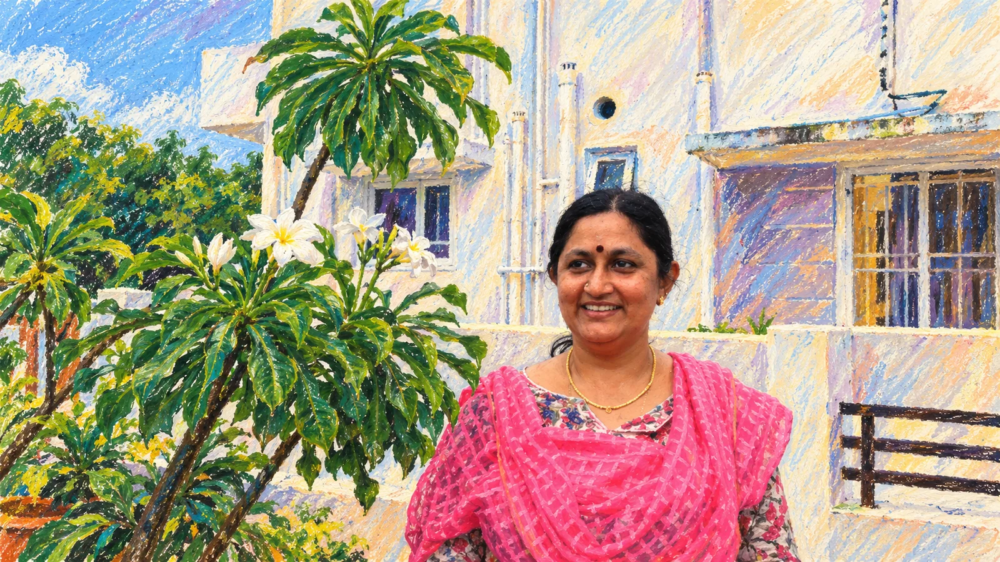

Visual journal
A gallery with purpose.
Portraits, reading rooms, microphones and public conversations come together as a visual essay. Open any image to view it in detail.
The painterly treatment connects the gallery to the tactile world of books, memory and spoken stories.
